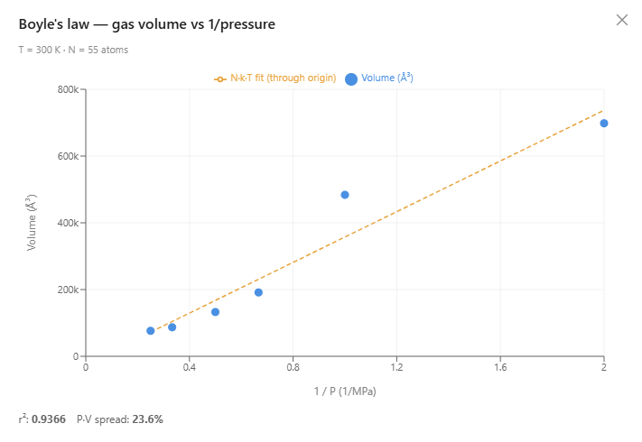
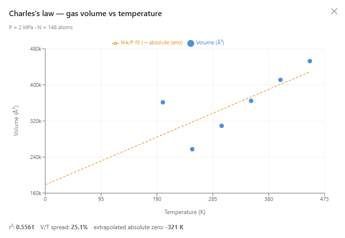

Discover the Gas Laws via AI-Assisted Simulations
Boyle, Charles, Gay-Lussac, and Avogadro in one box of atoms, controlled by AI agents.
The gas laws are among the first quantitative relationships a chemistry student meets: squeeze a gas and its volume drops, heat it and it expands, seal it and the pressure climbs as it warms. They are usually presented as formulas to memorize or as a cookbook laboratory exercise with a syringe and a hot-water bath. AIMS offers a different path: you discover these laws by talking to an AI agent that builds and runs a real molecular dynamics simulation for you. You ask a question in plain English; the agent sizes a box of atoms, conducts the experiment, plots the measured data, and helps you make sense of it. Nothing about the laws is programmed in — they emerge from the motion and collisions of individual atoms. In the window below, a box of argon is capped by a movable piston. Press the play button and watch the atoms fly, collide with the walls, and hold the piston up against the load pressing down on it.
A Piston Made of Molecular Collisions
Every gas law is a statement about how three quantities — pressure, volume, and temperature — trade off for a fixed amount of gas. To study them we need a way to hold one quantity constant while varying another. AIMS does this with a movable-piston barostat: a weighted plate that seals the top of the container. A constant load pushes the plate down into the gas, while the gas atoms push it back up through countless tiny collisions. Where the two balance, the gas pressure equals the applied pressure — a real constant-pressure ensemble, driven by kinetic theory, not by any hard-coded rule. A red arrow on the plate shows the applied load and grows longer as the pressure is raised, so students can literally see "push harder" before the plate has finished responding.
Because the pressure the gas exerts is computed from the momentum the atoms deliver to the walls, and the volume is read from the height at which the piston floats, the simulation gives students a microscopic picture of what pressure and volume actually are. A gas law that a textbook states in one line becomes something you can see happening, atom by atom. And you never have to configure any of this by hand: the AI agent knows how to size the container, place the gas, switch on the piston, set its load, and drive it — the whole apparatus is assembled from a sentence.
Ask a Question, Run an Experiment
AIMS is an AI-native environment, and the gas-law investigations are the clearest example of what that means. A student does not need to know the name "Boyle's law" or how to configure a barostat sweep. They simply type an everyday question into the chat — "what happens to the volume if I squeeze the gas?" — and the built-in AI agent recognizes the intent, steps the piston pressure through a series of values, lets the gas re-equilibrate at each, measures the volume, and drops a live chart of the results straight into the conversation. The experiment the student would otherwise have to set up by hand is orchestrated for them, and the measured data — not a canned illustration — is what they see.
You can build and run the whole investigation from scratch. Start a new Molecular Modeling project, open the chat, and type these prompts in order. The first group prepares the simulation — sizing the container, adding the gas, setting the conditions, and switching on the piston — so you have a working, watchable gas. The second group then runs the four experiments, each returning a chart in the chat.
Prepare the simulation
- Size the container — "Resize the simulation box to 80 × 80 × 120 ångströms so the gas has room to expand and the piston can travel."
- Add the gas — "Add argon to the gallery, then scatter 50 argon atoms across the box."
- Set the conditions — "Hold the temperature at 300 K and use a 5 fs time step, since argon's interactions are weak."
- Switch on the piston — "Turn on the piston at 2 MPa with a light 40 amu plate so I can see it move."
- Run it — "Run the simulation for 500 femtoseconds so I can watch the gas hold the piston up, then stop."
Investigate the four gas laws
- Boyle's law (volume vs. pressure) — "What happens to the volume if I squeeze the gas?"
- Charles's law (volume vs. temperature) — "What happens to the volume when I heat the gas?"
- Gay-Lussac's law (pressure vs. temperature) — "In a sealed, rigid container, what happens to the pressure as the gas gets hotter?"
- Avogadro's law (volume vs. amount) — "If I add more gas at the same temperature and pressure, what happens to the volume and the density?"
Each sweep re-uses the piston and thermostat you set up (Gay-Lussac temporarily switches the piston off for its constant-volume run) and restores your simulation afterward, so you can keep exploring between experiments.
Each investigation is a sweep: a sequence of small experiments in which one control variable is stepped and one observable is measured. The results accumulate into a single interactive chart embedded in the chat log — a lab notebook that records what was actually measured at that moment. The four classic gas laws map onto four sweeps.
The Four Gas Laws
Boyle's law (constant temperature). Holding the temperature fixed, the agent raises the piston pressure step by step and measures the shrinking volume. Plotted as volume against the reciprocal of pressure, the points fall on a straight line through the origin: the product P·V is constant. Compress the gas and it takes up proportionally less room. At the highest pressures the line begins to bend — a real, dense gas departs slightly from the ideal law, which is itself a teachable moment rather than an error.
Charles's law (constant pressure). With the piston holding the pressure fixed, the agent steps the temperature and measures the expanding volume. Volume rises in direct proportion to the absolute temperature, giving a straight line that, extended backward, crosses zero volume near −273 °C — the simulation reproduces the classic extrapolation to absolute zero directly from the measured data.
Gay-Lussac's law (constant volume). This one is mechanically different: the piston is switched off and the container becomes a rigid, sealed box. Now volume is the constant and pressure is the measured quantity — read from the force the atoms exert on the walls. As the gas is heated, the pressure climbs in direct proportion to the absolute temperature. It is the same physics that makes a sealed can dangerous in a fire, and it too extrapolates to zero pressure at absolute zero.
Avogadro's law (constant temperature and pressure). Here the agent changes the amount of gas — the number of atoms — while holding temperature and pressure fixed, and measures the volume. Volume grows in direct proportion to the number of particles: a straight line through the origin. This sweep also answers a subtler question that students often find confusing. Density is the mass divided by the volume, ρ = N·m / V. Because the volume grows in step with the number of atoms, the ratio N / V — and therefore the density — stays constant. Adding more gas at the same temperature and pressure makes the sample bigger but no denser, a fact that follows directly from the number of atoms and is easy to see once the V-versus-N line is on the screen.


From the Ideal Gas Law to Absolute Zero
Taken together, the four laws are the pieces of a single equation: the ideal gas law, P·V = N·k·T. AIMS surfaces this relationship directly: while the piston is running, the simulation continuously reports the value of P·V / (N·k·T), which sits near 1 whenever the barostat has brought the gas to equilibrium and the gas is behaving ideally. Students can watch this dimensionless number settle toward unity as the piston finds its balance point, turning an abstract equation of state into a live readout they can test against their own conditions.
Two of the sweeps — Charles's and Gay-Lussac's — independently extrapolate to the same special temperature at which an ideal gas would have zero volume and zero pressure. That temperature is absolute zero, and seeing it fall out of two different measured lines is a far more convincing encounter than being told the number. It is a small demonstration of how a quantity that can never be reached in the laboratory reveals itself through the geometry of the data.
Why AI-Assisted Simulation Matters
The value of doing this in a simulation is that nothing about the gas laws is assumed in advance. The atoms obey only the elementary rules of motion and collision; the pressure is tallied from momentum transfer, the volume from the piston height, the temperature from the average kinetic energy. When a straight line appears on the chart, it is the outcome of the microscopic dynamics, not a curve drawn to match a formula. This lets students experience the gas laws as emergent consequences of kinetic theory — and to probe the boundaries, such as the gentle departure from ideal behavior when the gas is squeezed into a small volume. What the AI adds is access: the machinery that makes such an experiment possible — a barostat, a thermostat, a stepped pressure sweep, an equilibrium average — is exactly the machinery a beginner does not yet know how to operate, and the agent operates it for them.
It also lets the investigation follow the student's curiosity rather than a fixed worksheet. Because the AI agent maps natural-language questions onto the right experiment, a student who wonders "does the pressure go up if I heat a sealed container?" or "does adding more gas change the density?" gets an experiment and a chart in reply, not just a sentence. The conversation becomes the laboratory notebook, and each question a new run.
Conclusion
This article uses the gas laws to illustrate a new way to learn science: not by reading about an experiment, and not by wrestling with simulation software, but by conversing with an AI agent that turns a plain-English question into a real molecular-dynamics experiment and hands back measured data. The four historical laws — Boyle, Charles, Gay-Lussac, and Avogadro — and the ideal gas law that unifies them are not delivered as facts to be accepted but as patterns to be discovered, measured, and explained from the motion of atoms. By pairing a physically grounded simulation with an AI that can set it up and run it, AIMS connects the microscopic and macroscopic pictures of matter and lowers the barrier between a student's curiosity and a genuine scientific investigation.
← Back to AIMS